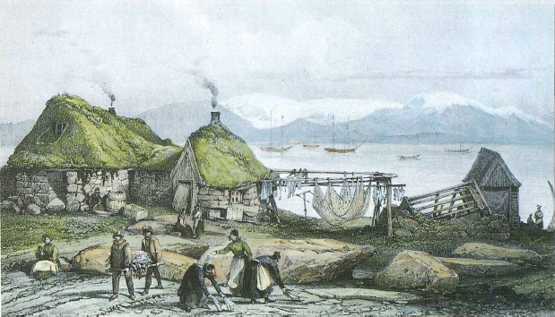
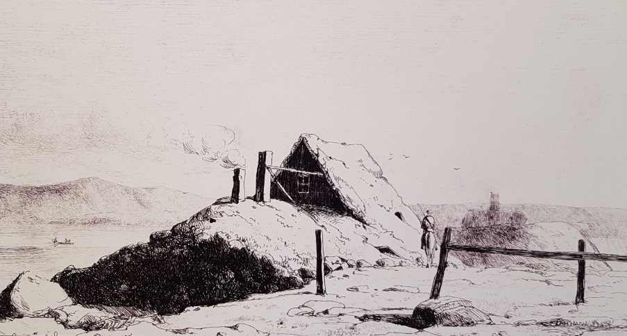

1836
Teikning sem talin er vera af Hellulandi frá árinu 1836. Leiðangur Gaimard teiknaði þessa mynd eins og fjölmargar aðrar sem reynst hafa ómetanlegar heimildir fyrir seinni tíma grúskara. Með góðum vilja má þekkja Esjuna í bakgrunni.

Teikning úr leiðangri Gaimards1836

Teikning eftir Emanuel Lasker1850
1850
Teikning Emanuel Lasker frá 1850 af Hellulandi. Árið 1807 gerðist Jón Snorrason tómthúsmaður í Hellulandi. Nokkrum árum áður hafði Jón verið dæmdur til dauða fyrir hjúskaparbrot og fleiri brot en dómnum breytt í refsivist. Tveimur árum síðar gekk hann í hjónaband með sérstöku leyfi Jörundar hundadagakonungs. Jón lést 1846 og hafði þá eignast 10 börn með 6 konum. Ein dætra hans hét Rómanía og bjó í Hellulandi eftir það. Hún þótti undarleg og margir hræddust hana, enda sögð skaphörð með afbrigðum og óvægin í orðum og athöfnum ef henni sinnaðist við einhvern. Margir trúðu því að Rómanía væri göldrótt, og að bölbænir hennar yrðu að áhrínsorðum.
Helluland var aumasta hreysi og svo rislágt að meðalmaður gat vart staðið uppréttur inni á miðju gólfi, og inngöngudyrnar svo lágar að fullorðið fólk varð að beygja sig mikið til að komast inn um þær. Bærinn var reistur skömmu eftir 1800 og rifinn 1888 þegar Geir Zoega byggði geymsluhús sem síðar varð veitingahúsið Naustið.